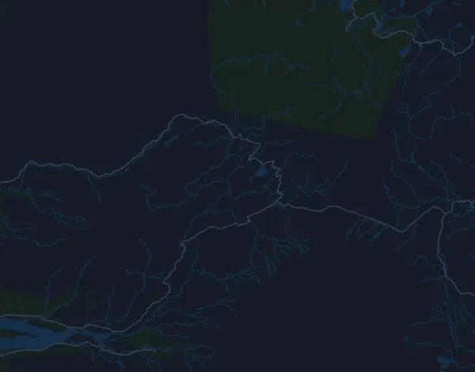

Laugavegur Ultra Marathon 52,4 km
- Matka
- 52,4 km
- Nousumetrit
- ↑ 1 287 m
- Korkein kohta
- 1 059 m mpy
- Alusta
- Maasto ja polku
- Luonne
- Mäkinen
Korkeusprofiili
Valmistaudu Milan kanssa
Mila on juoksuvalmentaja sovelluksessa. Kun lisäät kisan suunnitelmaasi, valmentaja suunnittelee viikot starttiin asti kuntosi mukaan ja antaa sinulle loppuaikaennusteen sekä suunnitelman vauhdista, juomisesta ja energiasta reitillä.

Oikea harjoitus. Oikea päivä.
Reitti

Tietoa reitistä
Laugavegur Ultra Marathon on 52,4 km:n polkujuoksu (Landmannalaugar, Islanti). Reitillä on nousua 1 287 m ja laskua 1 686 m, 25 m/km, joten reitti on mäkinen. Korkein kohta on 1 059 m ja matalin 200 m merenpinnan yläpuolella.
Suurin nousu alkaa kohdassa km 3,5: 169 nousumetriä 1,6 km:n matkalla, keskimäärin 10,5 %, ja huippu on 957 m mpy. Reitillä on yhteensä 15 vähintään 25 nousumetrin nousua; viimeinen alkaa kohdassa km 50,2.
Mila-sovelluksessa valmentaja kuvailee reitin tarkasti omalla kielelläsi ja suunnittelee vauhtisi ja energiasi sille.
Nousut
| Alkaa kohdassa | Pituus | Nousumetrit | Jyrkkyys | Huippu (m mpy) |
|---|---|---|---|---|
| km 0,0 | 760 m | 40 m | 5,2 % | 640 |
| km 1,2 | 630 m | 41 m | 6,4 % | 668 |
| km 1,9 | 450 m | 35 m | 7,8 % | 697 |
| km 2,5 | 540 m | 141 m | 25,9 % | 820 |
| km 3,5 | 1,6 km | 169 m | 10,5 % | 957 |
| km 6,9 | 3 km | 153 m | 5,1 % | 1 059 |
| km 12,2 | 1,4 km | 44 m | 3,1 % | 1 000 |
| km 15,2 | 140 m | 25 m | 17,8 % | 960 |
| km 20,8 | 890 m | 25 m | 2,8 % | 572 |
| km 22,1 | 1,4 km | 57 m | 3,9 % | 600 |
| km 28,9 | 3,4 km | 54 m | 1,6 % | 595 |
| km 39,2 | 2,1 km | 86 m | 4,1 % | 442 |
| km 42,5 | 420 m | 25 m | 6,0 % | 423 |
| km 47,7 | 710 m | 74 m | 10,3 % | 320 |
| km 50,2 | 740 m | 36 m | 4,8 % | 279 |
Vauhtitaulukko
Laugavegur Ultra Marathon 52,4 km ajassa 4:15:00 – vauhti kilometrillä ja väliajat
4:52 min/km · km 10: 48:43 · km 20: 1:37:25 · km 30: 2:26:08 · km 40: 3:14:51 · maali: 4:15:00
Laugavegur Ultra Marathon 52,4 km ajassa 5:15:00 – vauhti kilometrillä ja väliajat
6:01 min/km · km 10: 1:00:10 · km 20: 2:00:21 · km 30: 3:00:31 · km 40: 4:00:41 · maali: 5:15:00
Laugavegur Ultra Marathon 52,4 km ajassa 6:00:00 – vauhti kilometrillä ja väliajat
6:53 min/km · km 10: 1:08:46 · km 20: 2:17:32 · km 30: 3:26:18 · km 40: 4:35:04 · maali: 6:00:00
Laugavegur Ultra Marathon 52,4 km ajassa 7:00:00 – vauhti kilometrillä ja väliajat
8:01 min/km · km 10: 1:20:14 · km 20: 2:40:28 · km 30: 4:00:41 · km 40: 5:20:55 · maali: 7:00:00
Ajat olettavat tasaisen vauhdin koko matkan. Tämä on pelkkää laskentaa, ei ennuste: mäissä, ruuhkassa ja juomapisteillä vauhti vaihtelee.
Usein kysyttyä
Laugavegur Ultra Marathon 52,4 km: milloin kisa juostaan?
Laugavegur Ultra Marathon 52,4 km juostaan lauantaina 17. heinäkuuta 2027. Tarkista päivä ja lähtöaika järjestäjältä.
Laugavegur Ultra Marathon 52,4 km: kuinka pitkä matka on ja paljonko nousua on?
Matka on 52,4 km, nousua 1 287 m ja laskua 1 686 m. Korkein kohta on 1 059 m mpy.
Laugavegur Ultra Marathon 52,4 km: millainen reitti on?
Reitti on mäkinen, nousua keskimäärin 25 m kilometrillä. Reitillä on 15 vähintään 25 nousumetrin nousua; suurin alkaa kohdassa km 3,5: 169 m 1,6 km:n matkalla. Reitti kulkee lähdöstä maaliin, joka on eri paikassa. Alusta on maastoa ja polkua.
Laugavegur Ultra Marathon 52,4 km: miten jaan vauhtini?
Pyri tasaiseen rasitukseen mieluummin kuin tasaiseen vauhtiin: anna vauhdin hidastua ylämäissä, ota se takaisin, kun maasto tasaantuu, ja jarruttele ensimmäisillä kilometreillä. Suurimmat nousut alkavat kohdissa km 2,5, km 3,5, km 6,9 ja km 39,2. Milasta saat juuri tälle reitille vauhtisuunnitelman oman kuntosi mukaan.
Lisää samanlaisia kisoja
Lisää kisoja lähellä
- Íslandsbanki Reykjavík Marathon – 42,2 km (Marathon)Päivä ei selvillä · Reykjavík, Islanti
- Eiger Ultra Trail by UTMB – E101 Ultra Trail17. heinäkuuta 2027 · Grindelwald, Sveitsi
- Badwater 135 217 km19. heinäkuuta 2027 · Badwater Basin, Death Valley, Yhdysvallat
Valmistaudu Milan kanssa
Oikea harjoitus. Oikea päivä.
Tiedot ovat reittitiedostosta ja järjestäjän tiedoista. Tarkista päivä, lähtöajat ja säännöt järjestäjältä.
Mila ei ole yhteydessä järjestäjään eikä kisan sponsoreihin, eivätkä ne sponsoroi tai suosittele Milaa. Nimet ja tavaramerkit kuuluvat omistajilleen. Järjestäjä tai oikeuksien haltija? Pyydä muutosta tai poistoa